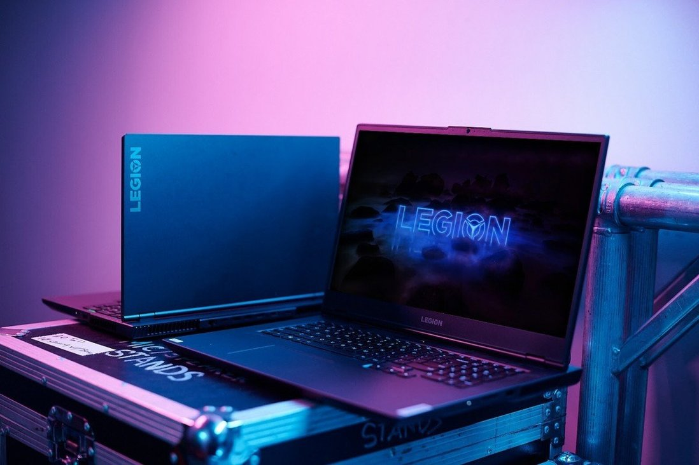

Min computer

Type
Min computer er 2,5 år gammel. Den blev købt da jeg skulle til at læse min sidefag Computerspilsudvikling, da jeg nu skulle til at designe og programmere.
Specifikationer
Ekstremt kraftfuld bærbar gamingcomputer med RTX 3080-grafik og Ryzen 9 5900HX-processor
- AMD Ryzen™ 9 5900HX
- NVIDIA GeForce RTX 3080 16 GB
- 32 GB RAM, 2 x 1 TB M.2 SSD
- 16" IPS WQXGA (2560 x 1600)
- 165 Hz opdateringshastighed
- Understøttelse af G-SYNC og FreeSync
- TrueStrike-tastatur med Corsair iCUE RGB
- Aluminiumschassis